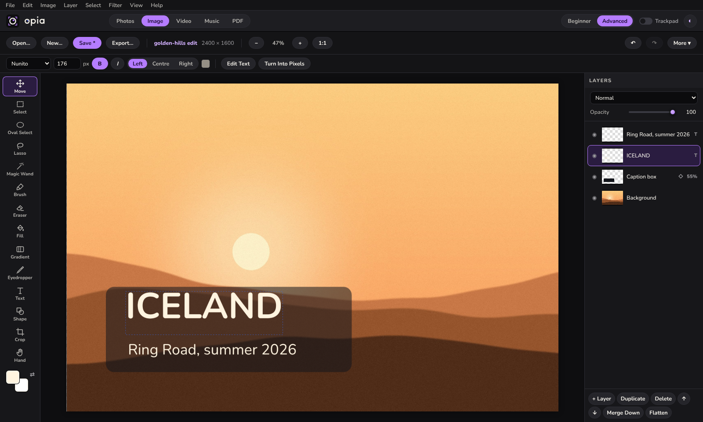
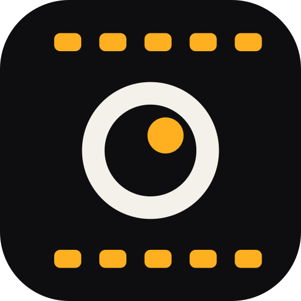
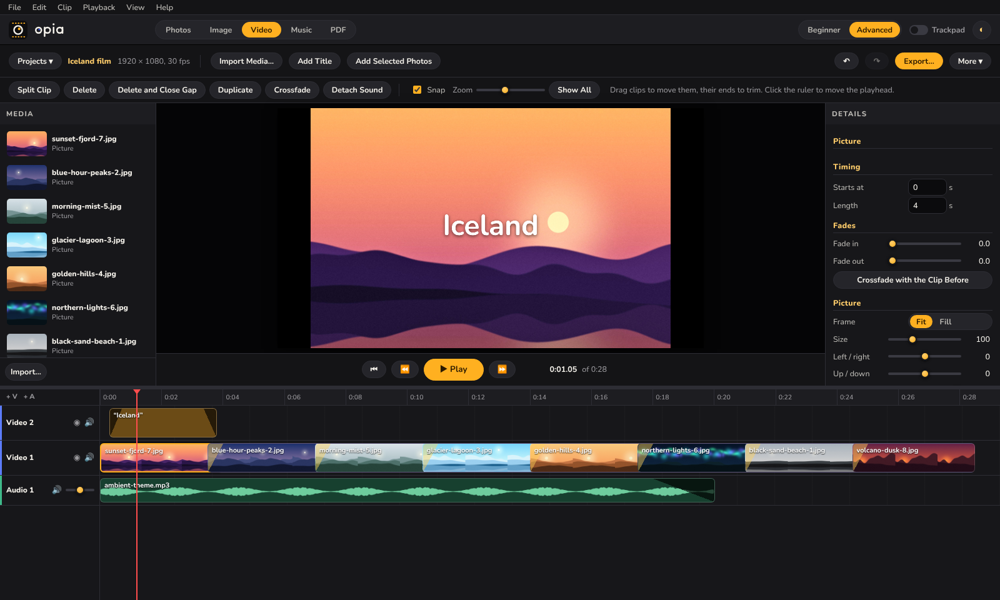
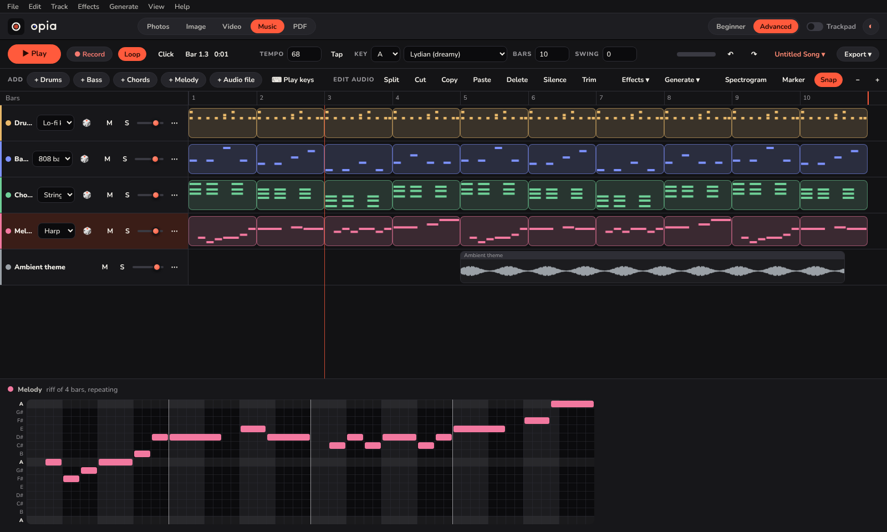
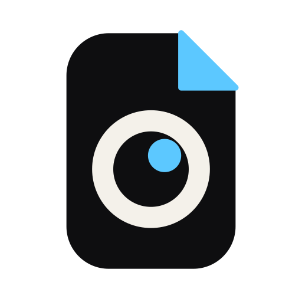
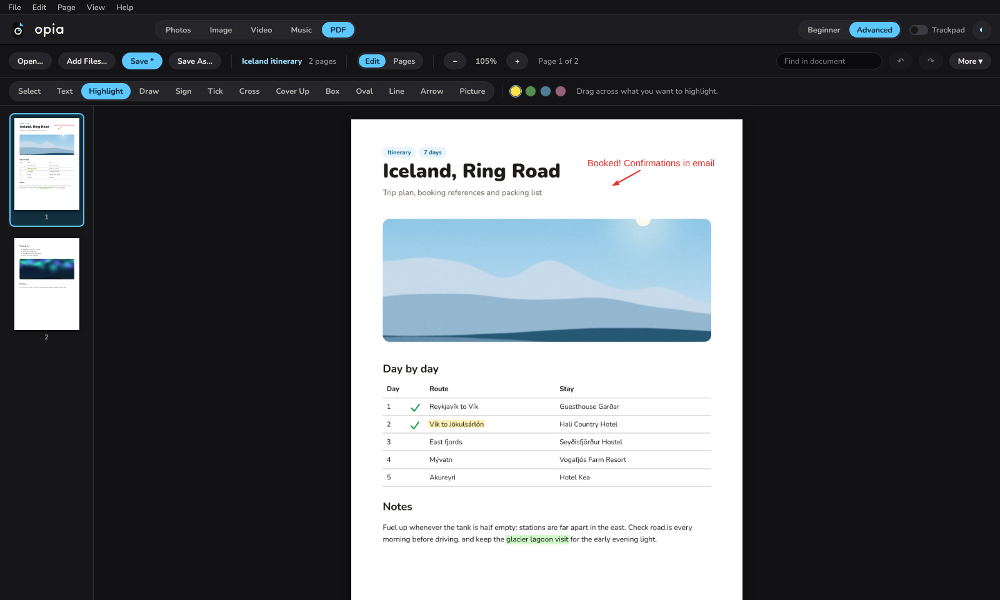

Levels, curves, hue and saturation with a live preview


Motion
A timeline video editor that exports MP4.
Video and audio tracks, trim, split and snap
Fades, crossfades, titles and picture-in-picture
Turn selected photos into a video in one click

Groove
A music studio for people who don't read music, and for those who do.
Riffs for drums, bass, chords and melody that always fit
Drag in sound files, record, cut and add effects
Export WAV, MP3, stems or MIDI


Folio
Read, fill in, sign and rearrange PDFs.
Type, highlight, draw, tick and sign anywhere
Reorder, rotate, split and combine pages and files
Page numbers, watermarks and passwords

LensImagineMotionGrooveFolio
Made to be easy
Simple when you start. Deep when you need it.
◐
Beginner and Advanced
Beginner shows the essentials in bigger controls. Advanced shows every panel and tool.
✦
Four themes
Opia Dark, Midnight Teal, Porcelain and Lilac Haze, each with its own accent per workspace.
Aa
English and Spanish
Switch language at any time, while the app is running.
⌨
Keyboard friendly
Every button reachable with Tab, menus on F10, shortcuts you can change.
✋
Trackpad mode
Two fingers pan, a pinch zooms, and sliders get bigger targets.
⧉
Works together
Open a photo from Lens in Imagine, or turn a set of photos into a Motion video.
⇪
Exports everywhere
JPEG, PNG, TIFF, WebP and AVIF, MP4, WAV and MP3, PDF.
⚙
Plug-ins
Add your own commands in Python, run after every import or export.
Private by design
Your files never leave your computer.
Opia has no account and no cloud. Your photos, songs, videos and documents stay in your own folders, and the originals are never changed. The only time it goes online is for map tiles, and for FTP uploads you start yourself.
No sign-up, no subscription
Works offline
Originals stay untouched
☁✕
What's new
Recently added
ImagineA layered picture editor: layers, selections, text, adjustments and filters.
MotionA timeline video editor with titles and crossfades that exports MP4.
GrooveDrag sound files onto the timeline where you want them, move clips between tracks, trim by the ends.
AccessibilityKeyboard access to everything, screen reader names and stronger contrast in every theme.
New namesThe workspaces are now Lens, Imagine, Motion, Groove and Folio.
Yes. There is nothing to pay and no account to make. The project has not chosen an open-source licence yet, so for now the code is shared to look at and run, not to reuse.
Does it work offline?
Yes. Everything runs on your computer. Only the map in Lens needs the internet, to fetch map tiles.
Which computers does it run on?
It is made and tested for Windows 10 and 11. It runs from Python source, but some parts (the Recycle Bin, disc burning, showing files in Explorer) are Windows-only, and other systems have not been tested.
Can it open my Lightroom catalog?
No. Lens has its own catalog format. It can read XMP sidecar files, so ratings, keywords and edits saved that way come across.
Will it change my original files?
No. Edits are stored separately, and Imagine, Motion and Folio always save new files. Your originals are never overwritten unless you choose to save over them.
What can it not do?
Photo editing is 8-bit, there is no PSD support or layer masks in Imagine, Motion has no speed changes or keyframes, and Folio cannot rewrite existing PDF text or read scans. The README lists every limit.